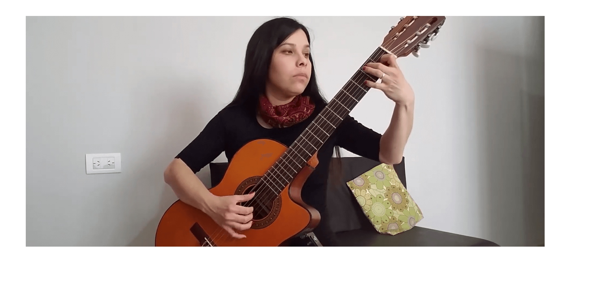

I consider myself a tenacious individual who has achieved her goals through dedication and the unwavering support of family and friends. Amidst the pandemic, my previous workplace closed its doors, and that's when I started teaching guitar lessons to children and adolescents online. This experience introduced me to the world of technology and sparked my interest in programming. I dove into resources and took my first course on HTML and CSS through Codecademy. Simultaneously, I worked on improving my English skills, with the aspiration of studying at Brigham Young University (BYU). Presently, I am proudly pursuing my first web and computer programming certificate at BYU.
1 / 3

Some Hobbies Aside from my passion for technology, design, and coding, I'm deeply interested in music.
2 / 3

Playing the guitar has been a relaxing and fulfilling activity for me since the age of sixteen
3 / 3

In the future, I hope to leverage my musical knowledge to contribute to the world of technology.